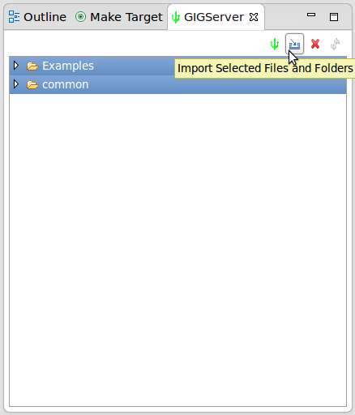
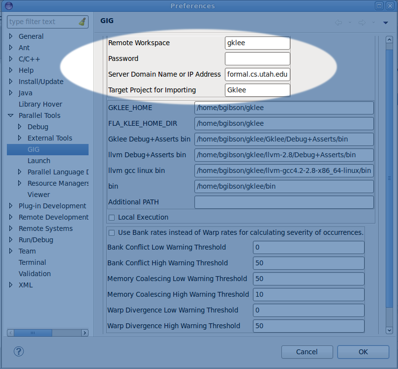
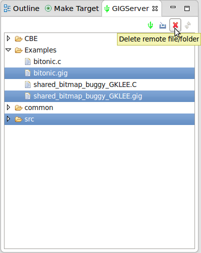
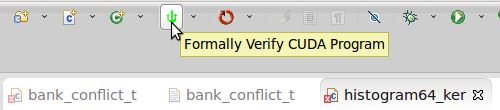
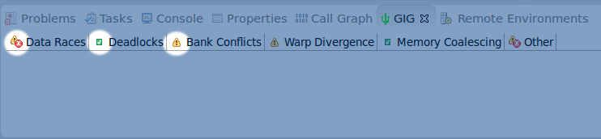
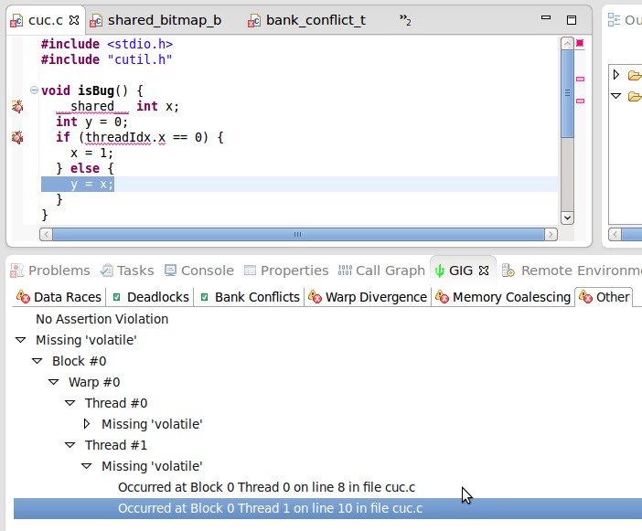
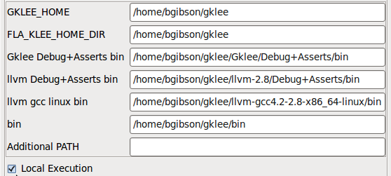
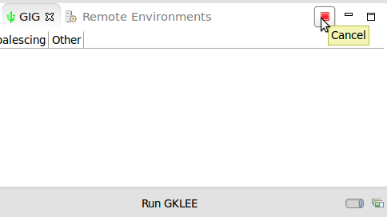
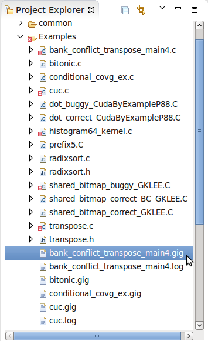

|
GIG - Graphical Inquirer of GPU Programs |
|
v1.3.0 |
Welcome to the Gauss Group's GIG Eclipse Update Site at the University of Utah School of Computing.
|
About GIG |
GIG is an Eclipse plugin developed to be a graphical front-end for the formal verification tool, gklee,
developed by the Gauss Group at the Univeristy of Utah.
Some parts of GIG are designed specifically for Linux, but the most important functionality is platform independent.
Gklee itself can be installed separately, but is not required. GIG adds a graphical front-end to gklee that allows easy use. GIG can communicate with a server that has gklee installed. This allows computers without gklee installed to still use GIG.
Using gklee, GIG can find many potential bugs and inefficiencies including:- Data Races
- Deadlocks
- Bank Conflicts
- Uncoalesced Memory Access
- Assertion Violations
- Missing Volatiles
|
Gklee Overview and Installation |
NOTE: It is NOT required for gklee to be installed and working properly before using GIG, unless you use the local verification option.
- Everything gklee related can be found here.
|
Installing GIG |
To install GIG, open Eclipse Juno. Go to Help->Install New Software and add a new update site: http://www.cs.utah.edu/formal_verification/GIG. Check the box next to GIG and click Next. Continue through the install wizard. Also be sure to switch to the C/C++ Perspective by Window->Open Perspective->Other->C/C++. If the views associated with GIG still don't show up, go to Window->Show View->Other->GIG then select and open the views.
You may wish to first install CDT and PTP. You can follow the steps on the Eclipse Wiki page to install CDT (C/C++ Development Tools) and PTP (Parallel Tools Platform).
More detailed information on the Eclipse CDT is here
More detailed information on the Eclipse PTP is here
|
GIG Documentation and Source Code |
- Some GIG help documentation is also available here on this site: Help page
- The source code for the GIG Eclipse Plugin is released under the Eclipse Public License and is available on github.
|
Using GIG |
- The GIG Server View is used for interaction with the server. Here you can view the remote workspace. You can also verify files remotely.
- Files from the remote workspace can be imported into your workspace by selecting them and clicking the import button.
- Files can be deleted remotely, or local files can also be uploaded by right clicking on them in your workspace, Selecting GIG->Send... The default workspace is write protected, so uploading and deleting won't work on it. We'll have to change the remote workspace under Window(Eclipse on Mac)->Preferences->Parallel Tools->GIG
- The default workspace is gklee, and has many examples to download and verify. In order to upload we need to change this to another one. Currently, there is no formal sign up procedure. One can simply type in a new workspace name and a password for it. Note that all subsequent accesses to that workspace will require the given password.
- You can either connect to the default server, or connect to a different one. In order to connect to a different server, you probably need to set it up yourself.
- You can also specify which project to import the files to by default.
- By switching to another remote workspace, you now have full access. You may need to refresh the view to see the changes. The refresh button is next to the delete button.
- In other workspaces, you can delete items. You can also upload files and folders by selecting them in the local workspace and right-click->GIG->Send...
- You can also open up a file and verify it by clicking the toolbar icon. This will automatically send the file to the server, verify it, and send the log file back. You can also verify a file by right clicking it and selecting GIG->Verify... When sending to the server, be sure that all necessary include files are there.
- Whenever a verification succeeds, the log file is parsed and displayed in the GIG View. Each tab of the GIGView has an icon that indicates the severity of the problem. How these icons are generated can be set on the Preferences page.
- If a tab indicates a problem, you may select it and traverse the trees. Double clicking tree items can hook you into the source files and the log file.
- Gklee can also be setup locally and prevent the need for a server execution at all. If gklee is installed locally, you can turn on the local verification by checking the box on the Preference page.
- A correct install of gklee includes setting a few environment variables. These need to be set in Eclipse as well. The default values are a guess, but may not be accurate for your system.
- If a local verification is taking too long, you may cancel it.
- One indicator that you are in fact verifying locally is that the .gig binary file will be created locally instead of remotely.










School of Computing * 50 S. Central Campus Dr. Rm. 3190 * Salt Lake City, UT
84112 * isp-dev@cs.utah.edu
Disclaimer